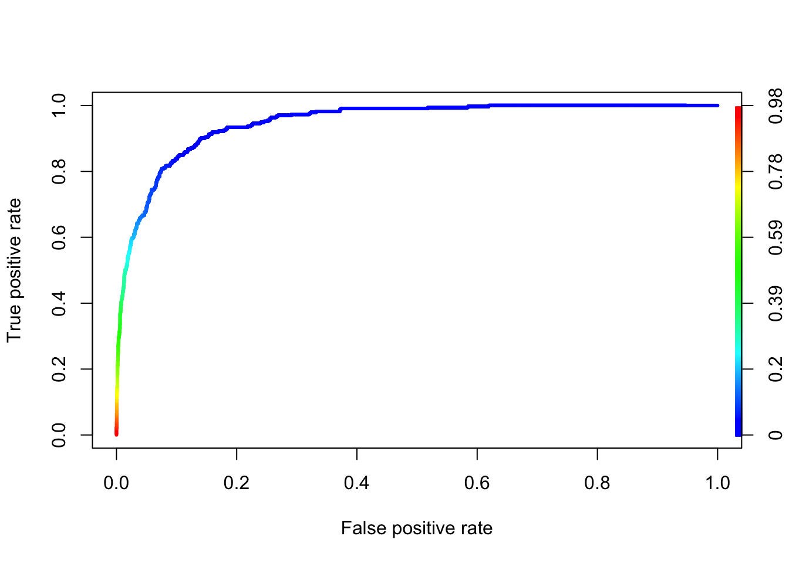
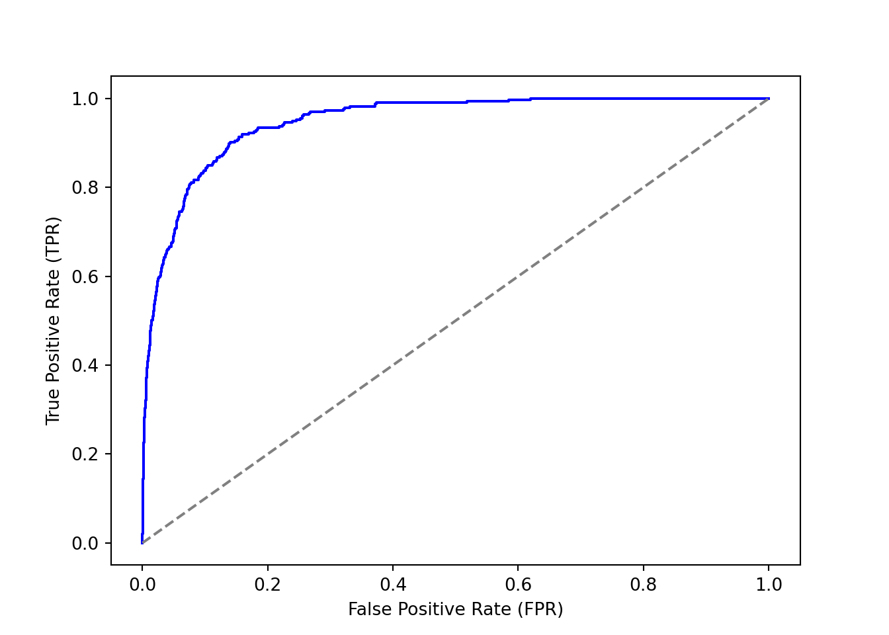

09- Logistic Regression Code Demo
1 R implementation
1.1 Binary (Binomial) Logistic Regression
Code
Estimate Std. Error z value Pr(>|z|)
(Intercept) -10.651330614 0.3611573721 -29.49221 3.623124e-191
balance 0.005498917 0.0002203702 24.95309 1.976602e-137Code
pi_hat <- predict(logit_fit, type = "response")
eta_hat <- predict(logit_fit, type = "link") ## default gives us b0 + b1*x
predict(logit_fit, newdata = data.frame(balance = 2000), type = "response") 1
0.5857694
No Yes
FALSE 9625 233
TRUE 42 100Code
library(ROCR)
# create an object of class prediction
pred <- ROCR::prediction(predictions = pred_prob, labels = Default$default)
# calculates the ROC curve
roc <- ROCR::performance(prediction.obj = pred, measure = "tpr", x.measure = "fpr")
plot(roc, colorize = TRUE, lwd = 3)
Code
auc <- ROCR::performance(prediction.obj = pred, measure = "auc")
auc@y.values[[1]]
[1] 0.94797851.2 Multinomial Logistic Regression
Code
(Intercept) sesmiddle seshigh write
general 2.852198 -0.5332810 -1.1628226 -0.0579287
vocation 5.218260 0.2913859 -0.9826649 -0.1136037 academic general vocation
1 0.1482764 0.3382454 0.5134781
2 0.1202017 0.1806283 0.6991700
3 0.4186747 0.2368082 0.3445171
4 0.1726885 0.3508384 0.4764731
5 0.1001231 0.1689374 0.7309395
6 0.3533566 0.2377976 0.4088458Code
dses <- data.frame(ses = c("low", "middle", "high"),
write = mean(multino_data$write))
predict(multino_fit, newdata = dses, type = "probs") academic general vocation
1 0.4396845 0.3581917 0.2021238
2 0.4777488 0.2283353 0.2939159
3 0.7009007 0.1784939 0.1206054We can also use glmnet package.
Code
library(fastDummies) # https://jacobkap.github.io/fastDummies/
library(glmnet)Loading required package: MatrixLoaded glmnet 4.1-8Code
prog <- multino_data$prog2
dummy_dat <- dummy_cols(multino_data, select_columns = c("ses"))
x <- dummy_dat |> dplyr::select(ses_middle, ses_high, write)
fit <- glmnet(x = x, y = prog, family = "multinomial", lambda = 0)
coef(fit)$academic
4 x 1 sparse Matrix of class "dgCMatrix"
s0
-2.69052260
ses_middle .
ses_high 0.98278066
write 0.05793834
$general
4 x 1 sparse Matrix of class "dgCMatrix"
s0
0.1625919
ses_middle -0.5337675
ses_high -0.1805596
write .
$vocation
4 x 1 sparse Matrix of class "dgCMatrix"
s0
2.52793069
ses_middle 0.29119238
ses_high .
write -0.05566551Code
, , s0
academic general vocation
1 0.4396037 0.3582719 0.2021245
2 0.4777583 0.2283218 0.2939199
3 0.7009084 0.1784762 0.1206154Code
# model_mat <- model.matrix(prog2~ses+write, data=multino_data)2 Python implementation
2.1 Binary (Binomial) Logistic Regression
Code
import numpy as np
import pandas as pd
from sklearn.metrics import confusion_matrix
import matplotlib.pyplot as pltCode
# Load your dataset
Default = pd.read_csv("../data/Default.csv")Code
Default['default'] = Default['default'].map({'Yes': 1, 'No': 0})
from statsmodels.formula.api import logit
logit_fit = logit(formula='default ~ balance', data=Default).fit()Optimization terminated successfully.
Current function value: 0.079823
Iterations 10Code
logit_fit.summary2().tables[1] Coef. Std.Err. z P>|z| [0.025 0.975]
Intercept -10.651331 0.361169 -29.491287 3.723665e-191 -11.359208 -9.943453
balance 0.005499 0.000220 24.952404 2.010855e-137 0.005067 0.005931Code
pi_hat = logit_fit.predict(Default[['balance']]) # Type = "response" in R
eta_hat = logit_fit.predict(Default[['balance']], which="linear") # Type = "link" in R
new_data = pd.DataFrame({'balance': [2000]})
logit_fit.predict(new_data)0 0.585769
dtype: float64Code
from sklearn.metrics import confusion_matrix
pred_prob = logit_fit.predict(Default[['balance']]) # Type = "response" in R
# Create predictions based on a 0.5 threshold
pred_class = (pred_prob > 0.5).astype(int) # Convert to binary class (0 or 1)
## C00: true negatives; C10: false negatives; C01: false postives; C11: true positives
confusion_matrix(y_true=Default['default'], y_pred=pred_class)array([[9625, 42],
[ 233, 100]])Code
from sklearn.metrics import roc_curve, roc_auc_score
# Calculate the ROC curve
fpr, tpr, thresholds = roc_curve(Default['default'], pred_prob)
# Calculate the AUC (Area Under the Curve)
auc = roc_auc_score(Default['default'], pred_prob)
auc0.9479784946837808Code
plt.figure()
plt.plot(fpr, tpr, color='blue')
plt.plot([0, 1], [0, 1], color='gray', linestyle='--') # Diagonal line
plt.xlabel('False Positive Rate (FPR)')
plt.ylabel('True Positive Rate (TPR)')
plt.show()
2.2 Multinomial Logistic Regression
Code
multino_data = pd.read_stata("../data/hsbdemo.dta")Code
multino_data['prog2'] = multino_data['prog'].cat.reorder_categories(
['academic'] + [cat for cat in multino_data['prog'].cat.categories if cat != 'academic'],
ordered=True
)
multino_data['prog2'].unique()['vocation', 'general', 'academic']
Categories (3, object): ['academic' < 'general' < 'vocation']Code
multino_data['ses'].unique()['low', 'middle', 'high']
Categories (3, object): ['low' < 'middle' < 'high']Code
multino_data['prog_int'] = multino_data['prog2'].map({
'academic': 0,
'general': 1,
'vocation': 2
})
multino_data['prog_int'] = multino_data['prog_int'].cat.codesCode
from statsmodels.formula.api import mnlogit
multino_fit = mnlogit("prog_int ~ ses + write", data=multino_data).fit()Optimization terminated successfully.
Current function value: 0.899909
Iterations 6Code
multino_fit.params 0 1
Intercept 2.852186 5.218200
ses[T.middle] -0.533291 0.291393
ses[T.high] -1.162832 -0.982670
write -0.057928 -0.113603Code
fitted_df = pd.DataFrame(multino_fit.predict(),
columns=['academic', 'general', 'vocation'])
fitted_df.head() academic general vocation
0 0.148278 0.338249 0.513473
1 0.120203 0.180629 0.699168
2 0.418679 0.236808 0.344513
3 0.172690 0.350841 0.476468
4 0.100125 0.168938 0.730937Code
dses = pd.DataFrame({
'ses': ['low', 'middle', 'high'],
'write': [multino_data['write'].mean()] * 3
})
multino_fit.predict(dses) 0 1 2
0 0.439684 0.358193 0.202123
1 0.477749 0.228334 0.293917
2 0.700902 0.178493 0.120605We can also use sklearn package.
Code
from sklearn.linear_model import LogisticRegression
from sklearn.preprocessing import OneHotEncoder
from sklearn.compose import ColumnTransformer
from sklearn.pipeline import Pipeline
# Separate features (X) and target (y)
X = multino_data[['ses', 'write']] # Independent variables
y = multino_data['prog_int'] # Dependent variable (categorical target)
preprocessor = ColumnTransformer(
transformers=[
('cat', OneHotEncoder(drop='first'), ['ses']), # One-hot encode 'ses'
('num', 'passthrough', ['write']) # Leave 'write' as is
]
)
# Create a multinomial logistic regression model
model = Pipeline([
('preprocessor', preprocessor), # Preprocessing step
('classifier', LogisticRegression(multi_class='multinomial', penalty=None,
solver='lbfgs', max_iter=500))
])
model.fit(X, y)Pipeline(steps=[('preprocessor',
ColumnTransformer(transformers=[('cat',
OneHotEncoder(drop='first'),
['ses']),
('num', 'passthrough',
['write'])])),
('classifier',
LogisticRegression(max_iter=500, multi_class='multinomial',
penalty=None))])
In a Jupyter environment, please rerun this cell to show the HTML representation or trust the notebook. On GitHub, the HTML representation is unable to render, please try loading this page with nbviewer.org.
Pipeline(steps=[('preprocessor',
ColumnTransformer(transformers=[('cat',
OneHotEncoder(drop='first'),
['ses']),
('num', 'passthrough',
['write'])])),
('classifier',
LogisticRegression(max_iter=500, multi_class='multinomial',
penalty=None))])ColumnTransformer(transformers=[('cat', OneHotEncoder(drop='first'), ['ses']),
('num', 'passthrough', ['write'])])['ses']
OneHotEncoder(drop='first')
['write']
passthrough
LogisticRegression(max_iter=500, multi_class='multinomial', penalty=None)
Code
model.named_steps.classifier.coef_array([[-0.71516627, -0.63453974, 0.05717724],
[ 0.4476491 , -0.0049987 , -0.00075151],
[ 0.26751717, 0.63953844, -0.05642573]])Code
model.named_steps.classifier.intercept_array([-1.97496981, -0.28559419, 2.260564 ])Code
dses = pd.DataFrame({
'ses': ['low', 'middle', 'high'],
'write': [multino_data['write'].mean()] * 3
})
pd.DataFrame(model.predict_proba(dses),
columns=model.named_steps.classifier.classes_) 0 1 2
0 0.439686 0.358190 0.202124
1 0.477748 0.228334 0.293917
2 0.700903 0.178494 0.120603